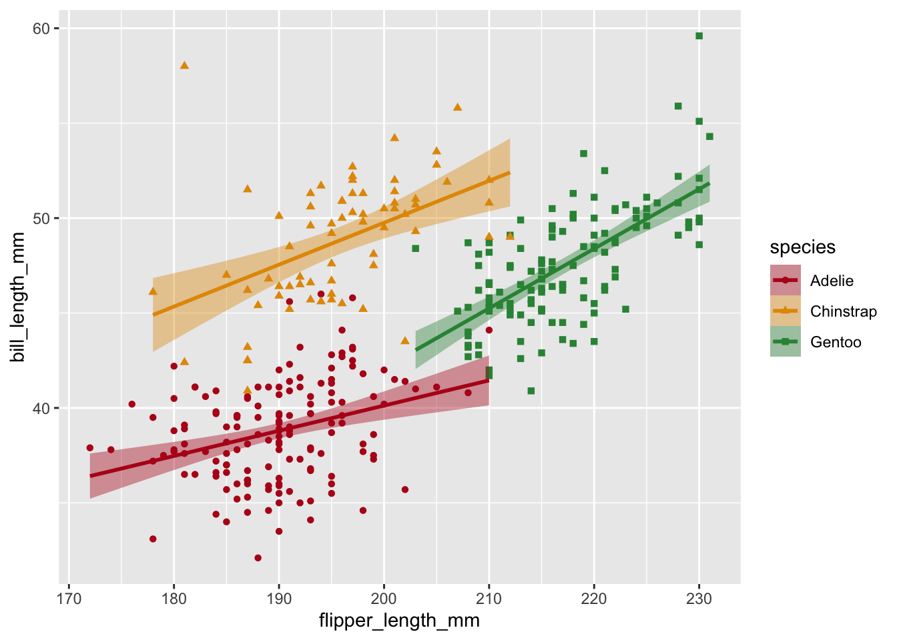

Crafting Publication Quality Data Visualizations with ggplot2
- Customize color palettes with accessibility in mind
- Customize appearance of plots with themes
- Customizing axes (ticks, grid-lines, labels, date axes, transformations)
- Create custom legends
- Save high resolution or vector formats
- Arrange multi-panel figures
Required by journals
Journals often require certain modifications to your plots to make them publication-ready
- High resolution
- Specific file types (TIFF, EPS, PDF are common)
- Figure size limits
- Font size suggestions
Not required, but good practice
Other modifications to the appearance of your plot are a good idea, but less often required by journals or reviewers
- Colorblind accessible colors
- Grey scale friendly colors
- Perceptually-even colors
- Screen-reader compatible
- High data-ink ratio (simplify plot, within reason)
- Arrangement of related plots into multi-panel figures
Example plots
A version of the plot from part 1 of this workshop series is re-created here.
p1
In addition, I’ll create two more basic plots for practice combining plots into multi-panel figures.
Code
#bill length vs. flipper length
p2 <-
ggplot(penguins,
aes(
x = flipper_length_mm,
y = bill_length_mm,
color = species,
fill = species,
shape = species
)) +
geom_point() +
geom_smooth(method = "lm")p2Code
# flipper length to mass ratio vs. bill_length
p3 <-
ggplot(penguins,
aes(
x = flipper_length_mm,
y = bill_depth_mm,
color = species,
fill = species,
shape = species
)) +
geom_point() +
geom_smooth(method = "lm")p3Color
There are many ways to change plot colors, including using built-in palettes, packages that add color palettes, and manually. It’s usually best to choose a color palette that meets these criteria:
- Colorblind friendly
- Greyscale friendly
- Perceptually even
- High contrast (with background & eachother)
The viridis color palettes built in to ggplot2 generally meet these criteria and are a good choice for many visualizations.
Here’s an example plot with a color bar:
v <-
ggplot(
penguins,
aes(x = bill_length_mm, y = bill_depth_mm, color = body_mass_g)
) +
geom_point()
vFor a continuous color scale use scale_color_viridis_c()
v + scale_color_viridis_c()Other palettes are available by changing option
# Variations with option = "A" through "H"
v + scale_color_viridis_c(option = "B")
A binned version is available with scale_color_viridis_b()
v + scale_color_viridis_b(option = "B", n.breaks = 5)The viridis palettes tend to end on a very bright yellow, which doesn’t look great on light backgrounds, especially on a projector. You can “cap” the scale using begin and end.
E.g. Begin at 10% in to skip the darkest purples and end at 90% to skip the brightest yellows
v + scale_color_viridis_c()
v + scale_color_viridis_c(begin = 0.1, end = 0.9)
Discrete colors
Our initial example plot uses just 3 colors, but we can still use viridis to ensure they are colorblind friendly and perceptually even using scale_color_viridis_d() for “discrete”. The colors still follow a gradient from cool to warm.
p2 + scale_color_viridis_d(end = 0.9, option = "C")To apply the same color scale to both “fill” and “color”, you can use the aesthetics argument to scale_color_* or scale_fill_* functions.
p2 +
scale_color_viridis_d(end = 0.9, option = "C", aesthetics = c("fill", "color"))Manual color palette
Maybe you don’t like the viridis palettes or maybe you want a palette more appropriate for diverging or discrete data. There are a ton of tools for generating color palettes—both R packages that extend ggplot2 and external tools.
Packages and resources to check out:
You can use any set of colors as a custom palette with scale_color_manual().
my_cols <- c("#B60A1C","#E39802","#309143")
p2 + scale_color_manual(values = my_cols, aesthetics = c("color", "fill"))
Specify which color goes with which factor level by using a named vector.
my_cols <-
c("Chinstrap" = "#B60A1C", "Gentoo" = "#E39802", "Adelie" = "#309143")
p2 <- p2 +
scale_color_manual(values = my_cols, aesthetics = c("color", "fill"))
p2
p3 <- p3 +
scale_color_manual(values = my_cols, aesthetics = c("color", "fill"))
p3
Labeling scales
Each scale (color, fill, shape), including x and y axes, can have a label. There are multiple ways to set this, but I’ll demonstrate setting it with labs()
p2 + labs(color = "Penguin Species")This creates a separate legend for color. Guides with the same name will get combined when possible.
p2 +
labs(
color = "Penguin Species",
shape = "Penguin Species",
fill = "Penguin Species"
)We can also use labs() to re-name the axes
p2 <- p2 +
labs(
color = "Penguin Species",
shape = "Penguin Species",
fill = "Penguin Species",
x = "Flipper Length (mm)",
y = "Bill Length (mm)"
)
p2p3 <- p3 +
labs(
color = "Penguin Species",
shape = "Penguin Species",
fill = "Penguin Species",
x = "Flipper Length (mm)",
y = "Bill Depth (mm)"
)
p3p1 <- p1 +
labs(x = "Species", y = "Body Mass (g)", shape = "Sex")
p1Custom Axes
Axes are a type of scale and can be modified with ggplot2 functions like scale_x_continuous() for continuous data, scale_x_discrete() for discrete data, etc.
Our first plot has a discrete x axis and a continuous y axis. We can use a scale_*() to change the x-axis labels (there are other ways to do this of course) and adjust the number of breaks on the y-axis
scinames <-
c("Adelie" = "P. adeliae", "Chinstrap" = "P. antarticus", "Gentoo" = "P. papua")
p1 <-
p1 + scale_x_discrete(labels = scinames) + scale_y_continuous(n.breaks = 12)
p1 You’ll notice that n.breaks=12 doesn’t produce exactly 12 breaks—it preferences “pretty” breaks at whole numbers and tries to get about as many breaks as you asked for. Supply a numeric vector to breaks if you want to specify the breaks exactly.
Axis limits
You can set the range of an axis two ways, and the choice of which way is consequential. Setting limits inside of scale_() crops the data while coord_cartesian() only crops the plotting area. With ylim(2000, 5500) the mean and standard error for our largest penguins are re-drawn using the cropped data while they are unaffected by coord_cartesian() (except that they go off the edge of the plotting area now)
p1 + scale_y_continuous(limits = c(2000, 5500), n.breaks = 12)
# p1 + ylim(2000, 5500) #shortcut if you only want to change limits
p1 + coord_cartesian(ylim = c(2000, 5500))We can use coord_flip() to make a horizontal graph.
p1 + coord_flip()coord_flip() only changes where the x and y axes are drawn. In the plot above, the axis labeled “species” is still the x-axis, as far as ggplot2 code is concerned.
Customizing appearance with theme()
There are several complete themes built-in to ggplot2, and many more available from other packages.
p2 + theme_bw()
p2 + theme_minimal()Customizing themes “manually” involves knowing the name of the theme element and it’s corresponding element_*() function. A good place to start is the help page for theme() https://ggplot2.tidyverse.org/reference/theme.html
It’s best to find a built-in theme_*() function that gets you most of the way there and then customize with theme()
p1 +
theme_minimal() +
theme(axis.line = element_line(linewidth = 0.5, lineend = "round"))Name some things about the appearance of p1 that you want to change and we’ll figure it out together!
You can save your theme as an R object to re-use, or use theme_set() at the top of a script to make it the default.
#create a custom theme
my_theme <-
theme_minimal() +
theme(
axis.line = element_line(linewidth = 0.5, lineend = "round"),
axis.ticks = element_line(linewidth = 0.2),
legend.background = element_rect(linewidth = 0.2)
)
#add to a plot
p2 + my_theme#or set as default
theme_set(my_theme)
p3Multi-panel figures
patchwork allows simple composistion of multi-panel figures with ggplot2 plots
+combines plots|combines plots side-by-side/combines plots vertically()can be used to nest operations
p1 / (p2 | p3)plot_layout()controls layout. The coolest feature, IMO, isguides = "collect"which combines duplicate legendsplot_annotation()is useful for adding labels to panels
p_combined <-
p1 /
(p2 + p3 + plot_layout(guides = "collect")) +
plot_annotation(tag_levels = "a", tag_suffix = ")")
p_combinedYou can also apply layers or themes to all sub-plots by using & instead of +
p_combined & theme_dark()Saving plots
Although we often leave this step until the end, I think it’s good to save your plot to a file early on once the plot starts taking shape. If you have some plot dimensions in mind, this allows you to see how any further changes will look in the finished plot.
ggsave(
filename = "penguins.png", # filetype comes from filename extension
plot = p_combined, # default is prev. plot, but good to specify
width = 7,
height = 5,
units = "in",
dpi = "print" # resolution for raster images
)
For example, with these dimensions (4x3 in.), the points and lines appear quite large and some of the text is probably larger than it needs to be. If we had saved the plot earlier, we wouldn’t necessarily have to go back and tweak things.
Raster vs. Vector
Raster images (e.g. .jpg, .png, .tiff) are made of pixels and the resolution can vary. Vector images (e.g. .svg, .eps) are not made of pixels and don’t have a resolution.
Try zooming in on the images below in your browser to see the difference


Vector images should be used whenever possible and accepted by the journal. Vector formats are more accessible for screen-readers as well (although you should always provide alt-text when possible)
Getting help
Besides adding ggplot2 to search terms, there a few good places to look for help or inspiration in improving or modifying the appearance of ggplot2 plots:
The
ggplot2documentation itself, in particular the examples on thetheme()page and the FAQ on customization.The R Graph Gallery has a wide variety of plots with R code walkthroughs.
The
ggplot2book: https://ggplot2-book.org/
You can always come by our drop-in hours to ask questions as well!
Part 3 next week!
“Exploring the wide world of ggplot2 extensions”
🗓️ June 26, 11:00am–1:00pm